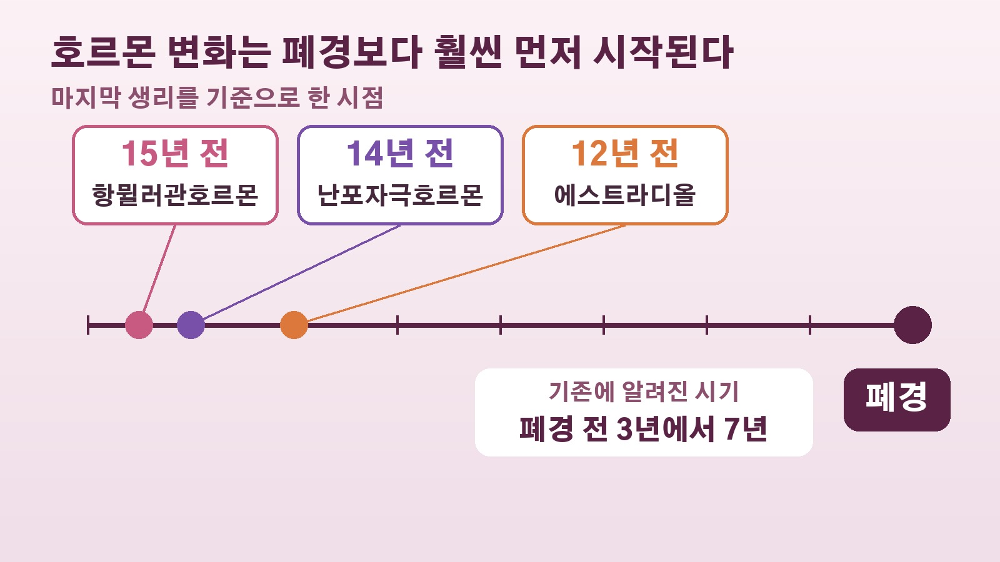

폐경 전후 검사 항목 90종 중 52종이 급변, 여성 100만 명 자료가 보여준 생리적 절벽과 12년 앞서 시작되는 호르몬 변화
마흔을 넘기면서 건강검진 결과표에 전에 없던 수치가 하나둘 보이기 시작하면, 이게 나이 탓인지 폐경이 다가와서인지 궁금해지시죠. 폐경은 몇 년에 걸쳐 천천히 지나가는 일로 알고 계신 분이 많은데, 여성 100만 명이 넘는 건강 자료를 분석한 연구에서 조금 다른 그림이 나왔어요. 마지막 생리를 전후해 몸의 여러 수치가 한꺼번에 크게 달라지고, 그 조짐은 폐경보다 10여 년 앞서 시작된다는 내용입니다. 연구가 무엇을 찾았고 어디까지 말해 주는지 차근차근 정리해 볼게요.
여성 100만 명, 검사 결과 3억 건으로 본 폐경
이번 연구는 이스라엘 와이즈만과학연구소 우리 알론 교수 연구팀이 국제학술지 네이처 메디신에 발표했어요. 미국 국민건강영양조사와 이스라엘 의료보험기관 클라릿이 약 20년 동안 모은 자료를 썼고, 미국과 이스라엘 여성 100만 명 이상의 검사 결과 3억 건을 들여다봤습니다.
핵심은 기준을 바꾼 데 있어요. 40대에서 60대 여성의 검진 결과를 그냥 나이 순서로 늘어놓으면 몸이 서서히 변하는 것처럼 보입니다. 그런데 폐경을 맞는 나이는 사람마다 다르잖아요. 연구팀은 각자의 폐경 시점을 기준으로 자료를 다시 맞춰 보는 통계 방법을 만들었고, 그렇게 정렬하자 여러 수치가 특정 시기에 가파르게 바뀌는 모습이 드러났어요. 연구진은 이를 생리적 절벽이라고 불렀습니다.
90종 가운데 52종, 뼈와 간과 지방 대사가 크게 흔들렸다
연구팀이 살펴본 검사 항목 90종 중 52종에서 통계적으로 의미 있는 변화가 확인됐어요. 여성호르몬만이 아니라 뼈 건강, 간과 신장 관련 지표, 혈중 지방, 혈액 성분까지 범위가 넓었습니다. 그중에서도 뼈 건강, 간 기능, 지방 대사 쪽 변화가 두드러졌어요.
비교를 위해 같은 연령대 남성도 봤는데, 남성에게서는 이렇게 특정 시점을 기준으로 수치가 확 바뀌는 모습이 나타나지 않았습니다. 그래서 연구진은 이 변화를 단순한 노화만으로 설명하기는 어렵다고 봤어요.
변화의 방향은 대체로 건강에 불리한 쪽이었습니다. 폐경 이후 골다공증이 늘어나는 속도가 빨라졌고, 심근경색이나 뇌졸중 같은 심혈관질환도 증가세가 가팔라졌어요. 반대로 좋아진 지표도 있었는데요. 생리가 멈추면서 매달 출혈로 빠져나가던 철분이 줄자 몸속 철분 저장량과 빈혈 관련 수치는 나아지는 경향을 보였습니다.
우울감과 잠 문제도 폐경 무렵에 몰렸다
마음과 수면 쪽 변화도 폐경 시기와 맞물려 있었어요. 폐경 뒤 첫 1년 동안 중등도 이상의 우울 증상을 보인 여성은 19퍼센트였는데, 폐경 후 1년에서 24년이 지난 여성들에서는 11퍼센트였습니다. 잠들기 어렵거나 잠이 모자란 문제도 폐경 무렵 늘었다가 그 뒤로 누그러지는 흐름이었고요.

다만 이건 여러 여성의 자료를 비교해 나온 경향이에요. 모든 사람에게 똑같이 나타난다는 뜻도, 시간이 지나면 우울감이나 수면 문제가 저절로 사라진다는 뜻도 아니라는 점은 같이 기억해 두시면 좋겠습니다.
호르몬은 마지막 생리 12년에서 15년 전부터 움직였다
이번 연구에서 가장 눈에 띄는 대목은 호르몬 변화가 시작되는 시점이에요. 난소 기능을 보여 주는 항뮐러관호르몬은 폐경 약 15년 전부터 줄어드는 속도가 빨라졌습니다. 난포자극호르몬은 약 14년 전부터 늘어나는 속도가 빨라졌고, 여성호르몬의 하나인 에스트라디올은 약 12년 전부터 감소가 가속됐어요.
그동안은 폐경 전 3년에서 7년 정도에 호르몬 변화가 두드러진다고 알려져 있었는데, 이보다 훨씬 이른 시기부터 속도가 달라진다는 결과가 나온 거예요. 알론 교수는 이번 연구가 예방적인 건강관리를 시작할 수 있는 시기를 폐경 약 10년 전까지 넓혀 준다고 설명했습니다.
호르몬 치료와의 관계, 그리고 이 연구가 말하지 않는 것
호르몬 치료를 받은 여성들은 폐경 전후 수치 변화가 상대적으로 작았고, 특히 뼈와 간, 신장 관련 지표에서 차이가 보였어요. 그렇다고 치료가 이 차이를 만들었다고 단정할 수는 없습니다. 치료를 받은 여성과 받지 않은 여성은 원래 건강 상태나 생활습관, 병원 이용 여건이 다를 수 있기 때문이에요. 연구팀도 실제 효과를 확인하려면 추가 임상시험이 필요하다고 밝혔습니다.
또 하나, 이 연구는 한 사람의 몸을 폐경 전후로 오래 따라가며 본 것이 아니라 대규모 검사 자료를 통계로 분석한 결과예요. 폐경을 맞는 날 몸이 갑자기 나빠진다는 이야기가 아니라, 여러 여성의 자료를 폐경 시점에 맞춰 놓았을 때 변화가 그 무렵에 몰려 있더라는 뜻입니다. 특정 나이부터 검사를 더 받아야 한다거나 호르몬 치료를 시작해야 한다는 새 진료 기준을 내놓은 것도 아니고요. 기사에서는 뼈 건강과 심혈관질환 위험을 생각해 폐경 전부터 운동과 식생활 관리에 관심을 두는 것이 중요하다고 짚었습니다.
참고한 기사: 동아일보 폐경 서서히 오는 줄 알았는데 여성 100만명 분석하니 몸 급변 2026년 10월 21일
태그
폐경 생리적절벽 갱년기 폐경전후 여성건강 골다공증 에스트라디올 항뮐러관호르몬 네이처메디신 호르몬치료